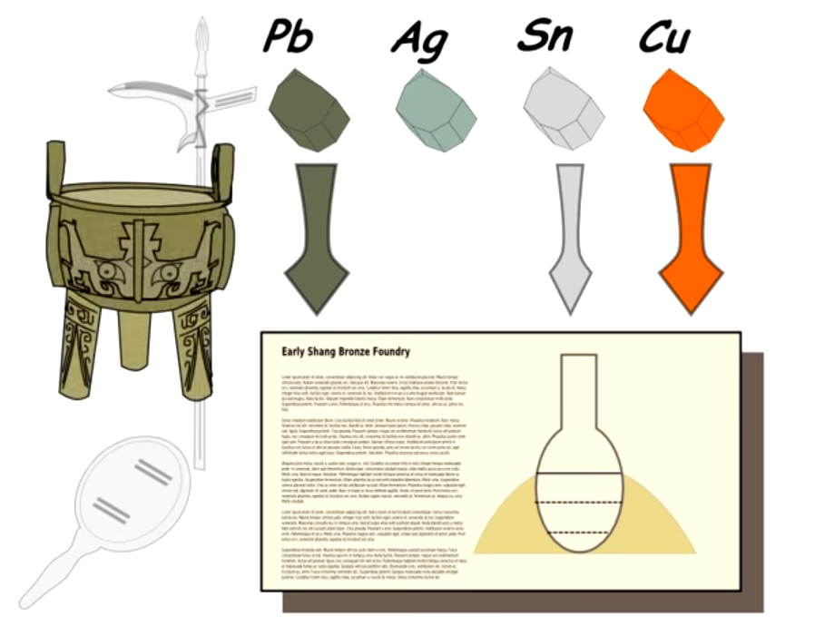

From the original site
This archived piece preserves its original text and historical context.
Velocipedia: An animated encyclopedia of verbs and processes

An imagination of a process-focused and icon-rich Wikipedia. A superficial example focuses on the social processes during the Sandai period in China, zooming into the production of Bronze. It includes a few detours, past fisherman to see panning for tin, and the various types of bronze in use for mirrors, weapons and sculpture. It ends with a representation of Jessica Rawson's "Ritual Revolution" when small, highly detailed vessels suitable for impressing a small group of elites were replaced with massive Ding tripods more suited to impressing a crowd.
What went right
I created both an animated and interactive view, which ensured that any unintuitive UI elements in the interactive view wouldn't prevent someone from seeing the whole concept. I think the animation actually turned out quite well, despite its primitiveness.
What went wrong
While it's about as ambitious as I hoped for, it's probably too generic and so a viewer could be excused for not knowing how such an encyclopedia would work in practice.
The next version would have
I still think a Velocipedia is a great idea, and with endeavors such as The Noun Project, Setosa, and Explorable Explanations, maybe we'll see a Velocipedia-like project. Were I to create a new demo, I'd focus much more on smaller processes and fleshing out various branches. For instance, a person panning for tin 3000 years ago doesn't just connect to bronze production but also to other historical ore panning processes, such as gold-panning in the American West. Making a bushier graph of those first-order connections may be a better way to start than trying to build up to something so complex as the Ritual Revolution.
Trivia
Inspired by an Areva commercial selling nuclear energy.